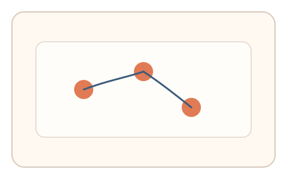
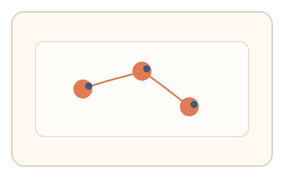

#97
Morphological Analysis - Combination Batches
已扩展
过冲比例序列
连续三次精准落点，记录过冲‑回拉比例序列并进行任务内相对比较。
概念原文
连续三次精准落点，系统测量每次过冲‑回拉比例并进行任务内相对比较。任务结构为短序列，信号形态为轨迹动力学。
用“过冲比例序列”构成生理签名。
研究背景
连续落点任务能显露人类纠偏的稳定性与波动范围。过冲‑回拉比例序列比单点更难被脚本稳定拟合。
核心机制
- 呈现连续三个目标点，要求精准落点。
- 记录每次过冲与回拉比例。
- 比较序列形态与相对关系。
- 与群体基线分布比对判定。
用户流程
- 步骤 1：用户依次点击三个目标点。
- 步骤 2：系统记录过冲与回拉比例。
- 步骤 3：系统比较序列形态并判定。
判定信号
过冲‑回拉比例序列
真实用户的纠偏序列具有稳定形态与微波动。
落点停顿节奏
自然点击会出现短暂停顿与调整。
判定逻辑
比例序列需落在人类分布区间并具有合理波动；过度一致或完全随机判异常。
对抗面
- 脚本固定过冲比例序列
- 重放真实用户的落点轨迹
防御与缓解
- 随机化目标位置与间距
- 引入轻微动态扰动降低模板化
- 叠加轨迹抖动与停顿信号进行多信号判定
可达性与风险
提供更大目标与慢速模式，支持键盘替代输入。
- 设备延迟影响过冲比例
- 触控设备误差更大
可视化状态

状态 1：连续目标
三次精准落点任务。

状态 2：过冲回拉
记录每次过冲与回拉。

状态 3：序列判定
比较过冲比例序列。
参考资料
Control theory
说明反馈控制与过冲现象。
Motor learning
说明纠偏与序列稳定性。